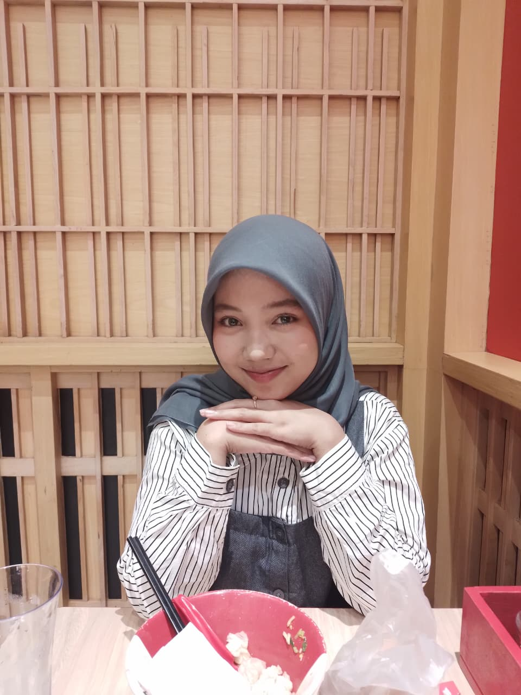

HELLO TEMANN
Haiii! Saya Hamdiyah Alifia Marsya Harahap, mahasiswa Ilmu Komputer yang sedang belajar membuat website, database, dan berbagai project pemrograman.

ABOUT ME
Saya adalah mahasiswa Fakultas Ilmu Komputer dan Teknologi Informasi yang memiliki ketertarikan dalam dunia teknologi, khususnya web development dan programming.
Saya senang mencoba hal baru, belajar coding, dan membuat project sederhana yang bisa menambah pengalaman saya dalam dunia teknologi.
Membuat struktur website menggunakan HTML dasar.
Membuat tampilan website agar lebih menarik dan responsive.
Mengelola database menggunakan PostgreSQL.
Membuat program sederhana menggunakan bahasa C/C++.
Website pribadi yang berisi informasi tentang diri saya, kemampuan, dan beberapa projek yang pernah saya kerjakan menggunakan HTML dan CSS.
Lihat Projek →Program permainan sederhana yang dibuat menggunakan bahasa C++ dengan beberapa pilihan tingkat kesulitan.
Lihat Projek →Projek database sederhana untuk mengelola data transaksi kasir menggunakan PostgreSQL serta menerapkan relasi antar tabel.
Lihat Projek →Punya project atau ingin berteman? Yuk terhubung melalui sosial media saya!